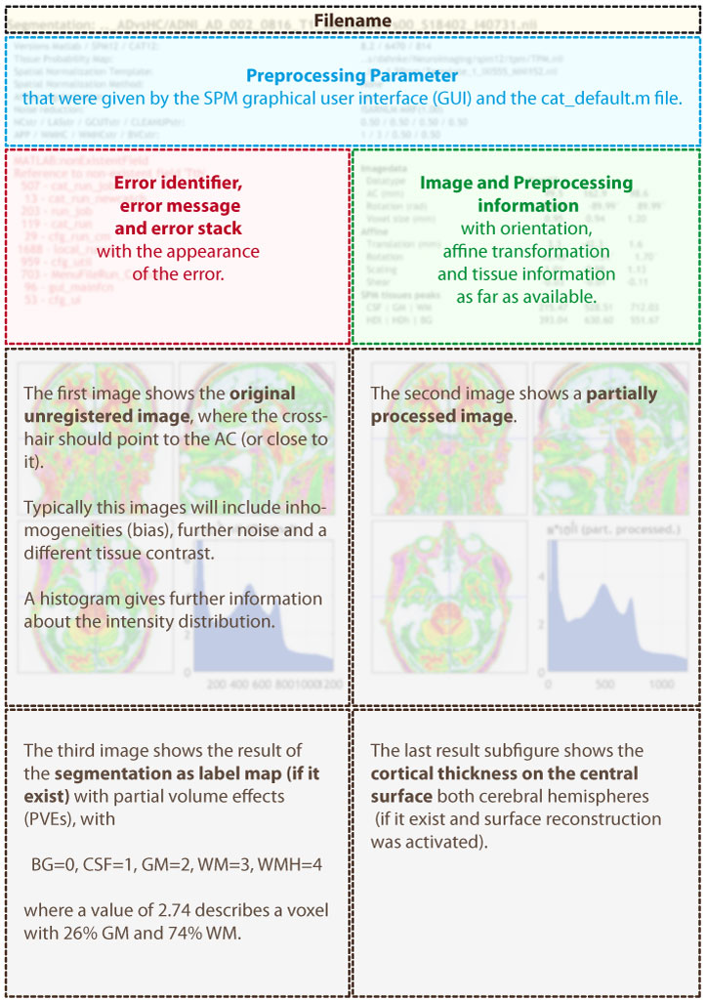

Catreport
The CAT error report has the same filename as the normal report and also includes the filename and the preprocessing parameter. In contrast to the standard report, it contain the error message, further information of the original image and the preprocessing as far as available. Images were added depending on the appearance of the error.
Please check the orientation of the first image, where the crosshair should be close to the AC. If you don't see an image at all, the AC is maybe outside or intensities are strange (check the histogram and the image parameter). Use the SPM display function for further checks and/or to correct the orientation of the image.
